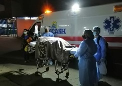
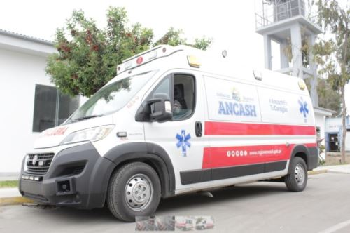
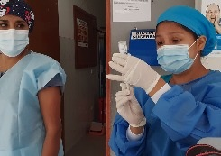
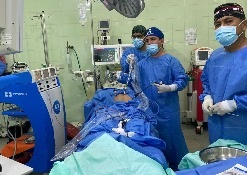
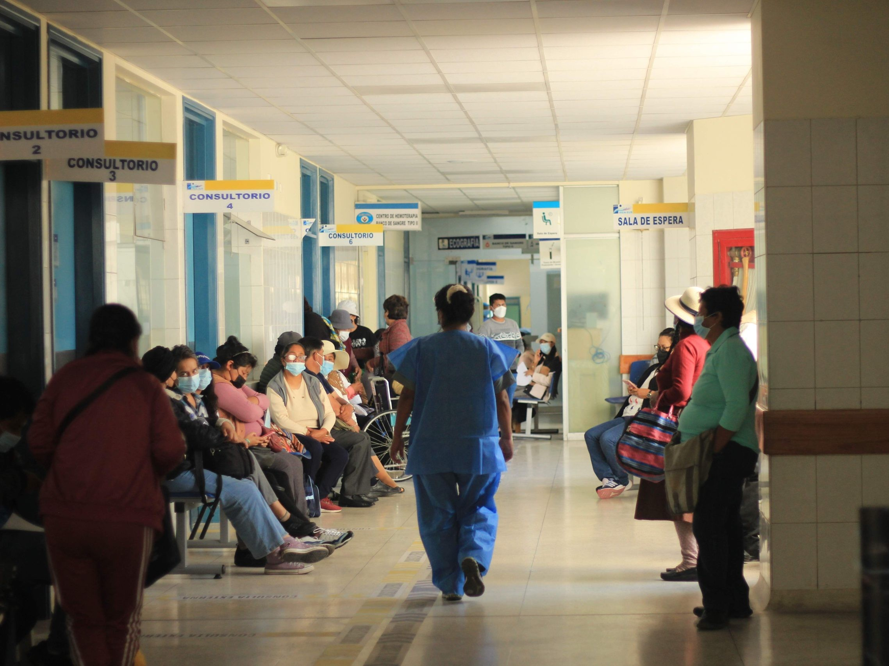

Chimbote, Áncash — Nivel de Complejidad II-2
Hospital público del Ministerio de Salud que brinda servicios especializados preventivos, promocionales, recuperativos y de rehabilitación para la población de Chimbote y la región Áncash.
Ver Servicios Ver EstadísticasLunes – Domingo
Atención las 24 horas
Lunes – Viernes: 8:00 am – 7:00 pm
Sábado: 8:00 am – 1:00 pm
Lunes – Viernes: 8:00 am – 3:45 pm
Reclamos y consultas
El Hospital La Caleta cuenta con un equipo de profesionales altamente capacitados que brindan diversos tipos de servicios de salud a nuestros pacientes a fin de lograr el diagnóstico y tratamiento correcto.

Medicina preventiva, general y especialidades. Atención de lunes a sábado.
Pacientes post-operatorios y con enfermedades que requieren tratamiento continuo.

Equipo médico especializado disponible las 24 horas del día los 365 días del año.

Licenciados y técnicos capacitados para brindar atención y cuidados de calidad.

El Hospital La Caleta es un centro hospitalario público de Segundo Nivel II-2, administrado por el Gobierno Regional de Áncash. Está ubicado en la Av. Malecón Grau s/n, en el distrito de Chimbote, provincia del Santa.
Brinda servicios de salud especializados a la población de Chimbote y zonas aledañas, siendo uno de los nosocomios más importantes del norte del Perú. Su historia está ligada al desarrollo industrial y portuario de Chimbote desde la Segunda Guerra Mundial.

Indicadores de atención y producción hospitalaria basados en el historial del establecimiento y datos referenciales del sector salud.
Consulta externa + Emergencia
Porcentaje de atenciones por área
Total de atendidos 2024
Por trimestre 2022 – 2024
Estamos disponibles para atenderte. Ante cualquier emergencia llama directamente a nuestro número de urgencias.
Av. Malecón Grau s/n
Urb. La Caleta, Chimbote – Áncash
(043) 327-589
Emergencias: 116
mesa_partes@hcaleta.gob.pe
estadistica@hcaleta.gob.pe
Lun – Vie: 8:00 – 15:30
Sáb – Dom: Sin atención